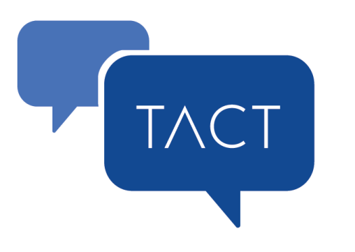
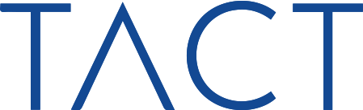
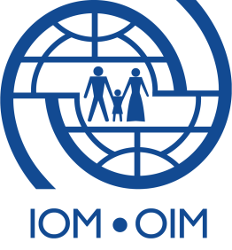

Transnational referral mechanism Model


VEGA Handbook: Children at airport - Children at risk on the move , Guidelines for Border Guards
Publisher: Frontex, 2016
Languages available: English
Thematic: Unaccompanied Migrant Children & Trafficking
Type: Training manual
Download PDF
ABSTRACT:
The handbook is the result of years of cooperation between Frontex, border guards, non-governmental agencies and international organisations such as United Nations High Commissioner for Refugees (UNHCR) and International Organization for Migration (IOM) to create a set of guidelines for border guards to help assist children at risk.
How can border guards and other people working at airports spot children who may be victims of trafficking? How does one talk to them? These are just a few questions answered in VEGA Handbook

Providing Effective Remedies for Victims of Trafficking in Persons
Publisher: ICAT, 2016
Languages available: English, French, Arabic
Thematic: Policy & Legislation
Type: Publication
Visit ICAT Website
ABSTRACT:
This ICAT issue paper argues that access to remedies for trafficking victims should be a core component of efforts to address human trafficking, and provides illustrative examples of effective remedies and limitations that currently exist in different jurisdictions. Effective access to remedies is important not only for victims' recovery but also for reaffirming their rights and preventing re-victimisation. The paper also looks at the right to effective remedies for victims of human trafficking under international law, the scope of applying effective remedies, the challenges to providing remedies to victims at the national level, and offers practical recommendations to improve access to remedies (including specific recommendations for law and policy-makers, as well as non-State actors) and to facilitate related international cooperation.

Pas à vendre (Not for sale)
Publisher: IOM Tunisia, 2016
Languages available: Arabic, French
Thematic: Prevention, Protection and Assistance
Type: Video
Watch video
ABSTRACT:
An awareness-raising campaign against human trafficking entitled "Not for Sale" was launched in 2016 by IOM Tunisia in cooperation with the Tunisian Ministry of Justice. The campaign aims to raise awareness of the general public, especially young people, about the existence and extent of human trafficking in the country.

Salma
Publisher: IOM Lybia, 2016
Languages available: Arabic, English and French subtitles
Thematic: Prevention, Protection and Assistance
Type: Video
Watch Video
ABSTRACT:
A house maid went to Libya to work and earn a living. Before arriving to Libya, she was full of hope aiming to provide a better life for her beloved ones in her home country. However, the reality turned out to be different as she lost her freedom and dignity owing to degrading working conditions.

Trace Human Trafficking - A handbook for policy makers, law enforcement agencies and civil society organizations
Publisher: Trace project consortium, 2016
Languages available: English
Thematic: Law enforcement
Type: Publication
ABSTRACT:
This handbook aims to support stakeholders by assessing and consolidating information about traffickers and trafficked persons, the wider criminal enterprise and its modus operandi, and the role of technology, as well as current and future trends. Understanding the crime within the broader context of the human trafficking enterprise can assist these three target groups in their efforts to effectively disrupt the human trafficking activities now and in the future.

The National Strategy on the Fight Against Trafficking of Human Beings and the Trafficking of Children
Publisher: IOM Albania, 2016
Languages available: Albanian, English
Thematic: Policy & Legislation
Type: Publication
Download PDF
ABSTRACT:
National Anti-trafficking Strategy of the Republic of Albania, including the National Action Plan for the period 2014-2017

National Action Plan for the Socio-Economic Re-Integration of Women and Girls Victims of Trafficking in the Republic of Albania
Publisher: IOM Albania, 2016
Languages available: Albanian, English
Thematic: Coordination & Cooperation (NRMs - TRMs)
Type: Publication
Download PDF
ABSTRACT:
The Strategy provides that action should be taken to draft an action plan on the re-integration of VoT and PVoT and highlights that some of its goals in relation to reintegration assistance to trafficked persons are largely dependent on a range of sector and cross-sector policies, including in the fields of education, employment, social inclusion and social protection, development and integration, gender, domestic violence, child protection and anti-discrimination

Study of Prevention Initiatives on Trafficking in Human Beings
Publisher: European Commission, 2015
Languages available: English
Thematic: Prevention, Protection and Assistance
Type: Publication
Download PDF
ABSTRACT:
The study examined 43 prevention initiatives, of which a share of 40% concerned actions in Romania, Bulgaria and Hungary. The vast majority of the (cca 85 %) in the given sample targeted information and awareness‑raising measures, followed by capacity‑building and research and education programmes. Among the key findings of the study is that there is no go-standard for assessing the impact of prevention actions but rather a comprehensive and contextual approach should be followed.

Guardianship for children deprived of parental care - A handbook to reinforce guardianship systems to cater for the specific needs of child victims of trafficking
Publisher: EU Fundamental Rights Agency, 2015
Languages available: English
Thematic: Unaccompanied Migrant Children & Trafficking
Type: Guidelines
Download PDF
ABSTRACT:
The research looks at how existing systems respond to the particular needs and vulnerabilities of presumed or identified child victims, or children at risk of trafficking and exploitation, such as unaccompanied children. This comparative report helps to understand better the strengths and weaknesses of national guardianship systems and may also assist decision makers to take measures to promote the effective protection of all children.

Information Manual on the Transnational Referral Mechanism for Victims of Human Trafficking in Belgium, the Netherlands and Hungary
Publisher: Ministry of Interior of Hungary, 2015
Languages available: Hungarian, French, Dutch, English
Thematic: Coordination & Cooperation (NRMs - TRMs)
Type: Publication
Visit Ravot-Eur project website
ABSTRACT:
This manual therefore primarily offers information on what human trafficking is and how the national referral mechanisms of Belgium, the Netherlands and Hungary work and what the linkages between them are.
It provides practical information for experts involved in the identification, referral and assistance of victims of human trafficking on the nature of human trafficking as well as effective ways of victims’ referral and assistance.

Life beyond trafficking - The re/integration of trafficked persons in the Balkans 2007-2014
Publisher: Kind Baudouin Foundation, 2015
Languages available: English
Thematic: Prevention, Protection and Assistance
Type: Publication
Visit website
ABSTRACT:
This booklet aims to highlight the main results and impact of the King Baudouin Foundation's project "Trafficking Victims Re/integration programme" in the lives of trafficked persons as well as more generally in the field of re/integration in the Balkans. It summarises the overall assessment conducted in 2014 through interviews of beneficiaries, partner NGOs, experts and government officials as well as other sources of data.

EU Strategy towards the Eradication of Trafficking in Human Beings (2012-2016)
Publisher: European Commission, 2012
Languages available: All EU languages
Thematic: Policy & Legislation
Type: Publication
Visit Website
ABSTRACT:
On 19 June 2012, the European Commission adopted the "EU Strategy towards the Eradication of Trafficking in Human Beings (2012-2016)”.
The Strategy is a set of concrete and practical measures to be implemented over the next five years.
It is based on five key priorities:
¤ Identifying, protecting and assisting victims of trafficking;
¤ Stepping up the prevention of trafficking in human beings;
¤ Increased prosecution of traffickers;
¤ Enhanced coordination and cooperation among key actors and policy coherence;
¤ Increased knowledge of and effective response to emerging concerns related to all forms of trafficking in human beings.

Directive 2011/36/EU of the European Parliament and the Council on preventing and combating trafficking in human beings and protecting its victims
Publisher: Official Journal of the European Union, 2011
Languages available: Bulgarian, Croatian, Czech, Danish, Dutch, English, Estonian, Finnish, French, German, Greek, Hungarian, Irish, Italian, Latvian, Lithuanian, Maltese, Polish, Portuguese, Romanian, Slovak, Slovenian, Spanish, Swedish
Thematic: Policy & Legislation
Type: Legislation
Visit Website
ABSTRACT:
This directive represents a critical step in the EU efforts in addressing human trafficking comprehensively. It establishes common standards for the prevention of trafficking in human beings and for the protection of victims, adopting a human-right based approach.
The directive also contains practical measures to be implemented in the EU member stats, such as the appointment of a national coordinator and establishment of national rapporteur (or equivalent mechanism).